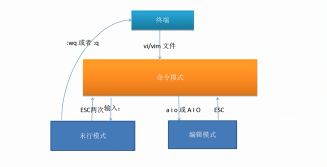
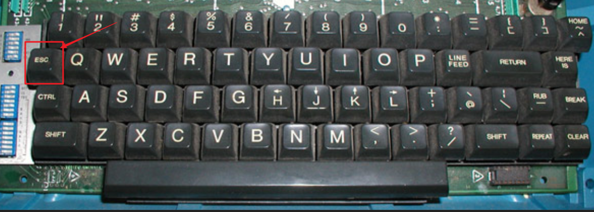
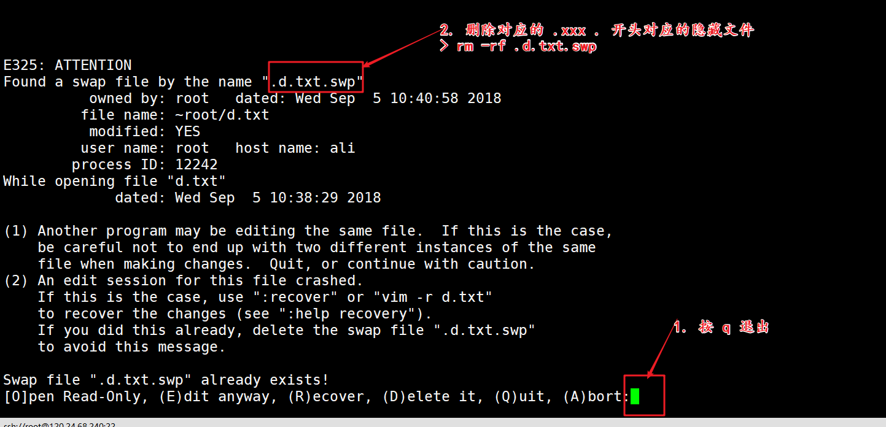
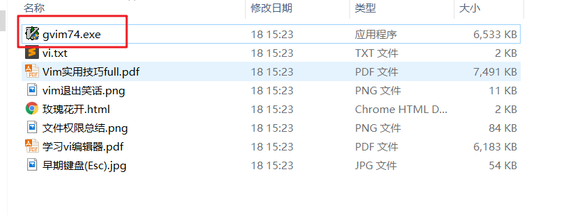

==VI/VIM-linux下的编辑器==
- vim编辑器（linux下的一个文本编辑器）是vi的一个升级版，如果学会vim ，其实也就会了vi。
- 用户和用户组（linux一个非常重要概念）才能更好去掌握linux下的权限问题。（linux是一个多任务、多用户操作系统）【笔试：如何理解 755 或者 644 这个数字？】
简介
现在我们掌握了linux的基本命令之后，我们可以通过命令来进行linux的基本操作，现在假设我们要在/var/www/html目录下编写一个叫做phpinfo.php的文件？那么这时我们应该如何编写phpinfo.php这个文件呢？
1 | # vim phpinfo.php |
问题来了：在linux下没有sublime Text这样软件工具，那么我们如何在命令界面中编写phpinfo.php的代码呢？在Linux如果希望编辑文件我们可以使用vi或者vim来进行编辑操作。
VI/VIM是一款编辑器，它们是Linux自带编辑器。VIM是VI的升级版。功能上VI和VIM都是一样的。
VIM具有语法着色的功能而VI没有，所以人们会更加喜欢使用VIM。(vi vim是同一个东西)
linux下常见的编辑器有：
nano最早的一个编辑器，很原始，不要学习
vim 只是vi编辑器的升级版（编辑器的神）（phpstorm 或sublime + vim插件 => 基本上可以完全脱离鼠标）
emacs Unix编辑器（神的编辑器）
vim 是编辑器中的神，所有编辑器 vim 最好用，一般的类Unix操作系统里面都自带vi(后期yum进行升级 yum install -y vim)；emacs是神的编辑器，使用的人是最牛的，一般在Unix的操作系统使用。
注意：一般linux操作系统也叫作 类 Unix 操作系统，早期linux由来是与Unix密不可分的。
vim编辑器测试
1 | vim |
vim打开文件的命令
1 | vim fileName |
==vim编辑器的三种模式【重要】==

当使用vim编辑器对某个文件进行操作的时候，需要注意vim存在三种模式，每种模式都存在一些特点的操作，例如在编辑模式下修改文件里面的内容，末行模式下实现文件的保存。并且这三种模式是可以相互进行切换的，已达到不同的目的。（esc 退出当前这种模式i代表是insert插入的意思 w 代表写入 q 代表退出 quit）
操作步骤
- vim fileName 打开一个文件，当打开一个文件后，默认处在命令模式
- 按一下 i 键 可以对文件的内容做编辑，可以对文件最实质性的操作，往里面写东西
- 按一下 esc 键 回到命令模式
- 输入 : ，然后在 输入 wq ，代表保存并退出
编辑模式-文件内容编写
当vim在打开一个文件之后，其实vim处于一个命令模式的状态在等待用户输入正确的指令才能切换到编辑模式【插入模式】当中，如果你输入的是1111这的内容在vim的命令模式下看来这个不是一个正确的指令，所以vim什么都不会做，这时有些人认为当前是死机的状态，然而不是，这是一个等待命令输入的状态。
- 输入表格中的命令就可以进入编辑模式
| 命令 | 解释 |
|---|---|
| i | 在光标之前插入内容 |
| I | 让光标回到行首输入内容 |
| o(小写字母o) | 在光标之下新起一行插入内容 |
| O | 在光标之上新起一行插入内容 |
| a | 在光标之后插入内容 |
| A | 让光标去到行末输入内容 |
退出编辑模式按esc键
输入 ：键，进入末行模式
输入 wq 保存并退出
末行模式-文件保存退出查找
一般末行模式也叫作尾行模式。当打开文件后，默认是在命令模式，如果需要修改文件的内容，需要按i键 进入插入模式， 当文件修改完之后，需要 按esc键 回到 命令模式， 按一下: 键 回到末行模式，在输入 wq保存并退出。
- 输入
:就可以让vim进入末行模式，以下命令是末行模式的常用功能
| 命令 | 解释 |
|---|---|
| :w | w是write的意思，意思是写入内容。newFilename 时另存 |
| :q | quit退出vim |
| :wq | 保存并退出 |
| :x | 保存并退出，相当于是:wq的简写 |
| :q! | 强制退出 ! 表示强制 |
| :w! | 强制保存（写入） |
| :wq! | 强制保存并退出（root去操作一些只读的文件） |
| :set nu | 设置行号nu（number） |
| :set nonu | 取消行号 |
| :1 | 回到行首 |
| :n | 去到第n行，如去到第21行 |
| : /关键字 | 搜索关键字，如果有关键字，进行高亮 |
| :nohls | 去除高亮显示 【highlights，高亮】 |
- 使用两次esc键可以退出末行模式，进入命令模式
示例
1 | 1.末行模式下设置行号 |
1 | 2.如何取消 |
1 | 3.文件的退出 |
1 | 4. 文件保存 |
1 | 5. 查找 |
1 | 6.取消关键字的高亮(noh = no highlights高亮) |
命令模式
在命令模式下，主要是做做一些命令的操作，例如文本的复制，删除等。其主要操作如下
| 命令 | 解释 |
|---|---|
| G | 去到末行 |
| gg | 去到首行，相当于输入:1 |
| r | replace的意思，替换光标选中的内容 |
| x | 删除光标选择中内容 extract |
| u | 撤销功能(undo)，相当于windows下的ctrl+z ，如果我们是切换到末行模式下可以输入: 3u 代表撤销三步 |
| yy | 复制一行 注意如果 3yy 代表复制3行 |
| p | 粘贴 如果是小写p则在光标所在下一行进行粘贴，如果要想在光标上一行粘贴，按 P(大写) |
| dd | 删除一行 |
| ndd | 删除n行，3dd删除3行 |
思考：如何快速的删除所有的行？
答：从头删除到尾
- gg（文首）
- d （delete 删除）
- G （文末）
总结：在命令模式下快速 ggdG
光标移动相关演示操作
只要键入vim打开文件就处于命令行模式，在命令模式下，可以使用键盘的 上下左右 做移动，也可以使用 如下按键：
h 向左
j 向下
k 向上
l 向右
光标级的移动
答： h j k l
单词级别的移动
答：
e 键：可以跳到当前单词的末尾，或者下一个单词的末尾（end）
b 键：可以跳到当前单词的首部，或者上一个单词的首部（before）
行级别的跳动
答：
0：代表行首
$：代表行尾
指定行数跳转
答：NUMBER+G
例如：从第一行跳到第18行
跳到文档的第一行首部
答：gg
跳动文档的最后一行的首部或者尾部
答：G
文本内容删除
删除一行
答：dd
删除单个字符
答： x （使用 x 可以单个字符）
指定行数删除
答：NUMBER + dd
删除当前光标到行尾的所有字符
答：d$
删除当前光标到行首的所有字符
答：d0
复制操作
复制单行
答：在命令模式下使用 yy 复制一行，按 p 粘贴该行信息 （大写P： 当前光标的上一行粘贴）
复制多行
答：NUMBER+yy
vim常见开发技巧及问题
esc快捷键
为什么在使用vim编辑器的时候，要使用esc键做模式的切换。
答：早起的键盘的esc键是在Q旁边，非常方便小拇指的使用，现在的键盘esc键不方便使用。

如何解决手指无法触及 esc 键？
答：在用户家目录的 .vimrc 文件中定义一个快捷键来代替 esc 键
1 | cd (备注：cd 后面如果什么都不加，代表是回家，回到家目录 或者 cd ~ ~代表的是家目录) |
当打开文件，按 i键 进入插入模式，书写完内容后，然后快速的 按 jj , 这个时候就回到了 命令模式，然后在输入 ： 回到末行模式 ，在输入 wq 保存退出。
默认行号
使用 vim编辑器 打开文件默认有行号
1 | cd |
非法关闭文件
当文件非法关闭之后，无法正常使用，如何解决？
答：删除该隐藏文件即可

清屏
有的时候 见到别人输入 cls 来清屏 （.bashrc 这个文件是当前bash shell的配置文件）
1 | cd |
然后在执行如下重新读取配置.bashrc
1 | . .bashrc ( . 代表的含义是读取该配置文件 ) |
解锁vim锁住
当有的时候用户习惯按 ctrl+s在vim下实现文件的保存
解决：可以使用ctrl + q 键
编辑撤销
文件编辑的撤销
解决：在末行模式下输入u，也可以输入NUMBER+u 代表撤销NUMBER步操作
==用户和用户组==
简介
linux是一个多用户 ：同一时间可以让多个用户登录到该操作系统、多任务：同一时刻可以完成多个任务，可以运行多个软件 的系统，Windows系统是多任务单用户的操作系统。
多任务：操作系统可以同时完成多个任务，例如听歌、操作word、看电影
多用户：同一时间，多个用户可以同时登录操作系统
单用户：同一时间，只有一个用户登录操作系统
对于一个linux操作系统，是一个多用户的操作系统，那么不可避免的要添加用户，删除用户….
用户的管理curd：
- 用户的添加
- 用户的展示
- 用户的修改
- 用户的删除
语法：user+ add|del
用户的管理（root）
用户添加
1 | useradd userName |
添加的用户信息保存到哪里？
答：保存到/etc/passwd文件
1 | [root@dockerTest ~]# cat /etc/passwd |
每一行代表一个用户信息，同时每行由七个部分组成：
- 用户名
- 密码位(该位只是用户密码的占位符，并不实际存放用户的密码，用户的实际密码保存在
/etc/shadow[影子文件]文件里面) - UID 用户id（备注：500及之前的已经被linux操作系统默认保留使用的）
- GID 用户组id，体现分类管理的思想，一个组下可以存在多个用户，通过划分小组，可以更好的管理linux下的用户
- 注释信息（有的时候在添加用户的时候给的备注信息）
- 用户的家目录（系统在添加用户的时候，默认会在
/home/下用户名同名的目录） 默认情况下，用户在自己的家目录可以做任何事情。 - 用户能够使用的命令解释器 (shell， 一般使用
/bin/bash)/sbin/nologin代表的含义：在linux下，当我们运行一个服务的时候，例如web服务，则这个服务需要一定的用户身份来启动 web服务的命令但不需要登录。如果分配的是这个 shell 则表示用户没权限登录到Linux系统。
用户名修改
1 | usermod -l newName oldName |
-l ，小写字母L ，表示后边要修改的是登录名
修改密码
超级管理员修改
1
passwd USERNAME
修改当前用户名的密码(后面不需用户名，直接回车)
1
passwd
用户删除
1 | userdel USERNAME |
注意：当使用 userdel USERNAME 删除用户的时候，默认不会删除用户的家目录，需要加上一个参数-r 选项即可删除用户的同时也删除用户的家目录。
组的管理（root）
为什么要设置组？
答：其主要的目的就是为了管理上的方便。管理一个组的成本远小于管理每个用户。
例如：为某一个组设置了权限，那么相当于组内所有的用户全部拥有了该权限，方便设置管理。
主要操作是
添加、修改、删除、展示
语法：group + add | del | mod
组添加
1 | groupadd superadmin |
注意：当添加组信息之后，该信息被保存在/etc/group文件里面
1 | [root@dockerTest ~]# cat /etc/group |
注意：
- 组名
- 组密码的占位符（一般选择的linux操作系统不在使用组密码）
- 组ID
- 组成员，逗号分隔
例如：添加用户的时候为用户指定组
1 | useradd -g 505 lilei |
可以在该用户登录后，使用 id 命令查看组信息
1 | [root@dockerTest ~]# id |
注意：当我们在linux下使用root创建一个普通用户的时候，如果没有使用-g指定当前用户所属的组，则linux默认会自动生成一个和当前用户同名的小组，并且把当前用户加入到该组里面。
1 | useradd liyang |
组修改
修改组名
1 | groupmod -n newGroup oldGroup |
组删除
1 | groupdel groupName |
注意：当组内还有成员的时候，不允许删除
==linux下的权限操作==【重点】
==【笔试题常见】==
简介
由于linux是一个多用户的操作系统，在同一时刻可能存在多个用户登录操作系统，每个用户都存在各自属于自己的文件，则这个时候需要一个合理的权限机制来管理这些信息，不然就会出现混乱。
在linux下的权限分为三个部分：可读(Read)、可写(Write)、可执行(eXecute)
同时按照用户将权限划分为三类
文件的拥有者： 主人 （u）user
文件所属组：所属组 （g）group
除开前面两类的其他人：其他人( o) others
例如：可以使用 ls -l fileName 来查看文件的权限信息
1 | [root@dockerTest ~]# ls -l a.txt |
这个权限字符串有10个字符组成，其含义如下：
- 文件类型：-代表是普通文本文件，d代表目录，l代表符号链接(快捷键 link)
- 后面的9个字符，每三个字符为一组，分别代表代表文件的拥有者、所属组、其他人
- 每组中存在 r、w、 x、 - 这四个字符的组合，分别为 可读、可写、可执行、没有权限
rw-：此分为三个部分
r代表可读，-没有权限w代表可写 ，-没有权限x代表执行权限，-没有权限- 代表没有执行的权限（如果是一个普通的文本 ascii ，如果里面使用 shell 编程，这里代码可以被执行，但需要执行的权限
可读、可写、可执行解释
如果是对普通文本文件的可读、可写、可执行操作是什么含义？
答：
可读：可以查看文件里面的内容（cat、more、less、tail、head）
可写：对文件的内容做编辑（vim、echo），但是不代表能删除该文件，如果要删除该文件，需要对该文件的目录有可写的权限才可以删除。
可执行：linux有一种编程叫做 shell编程，对脚本文件有可执行权限，表示可以执行文本文件里面的代码
如果是对文件夹的可读、可写、可操作是什么含义？
答：
可读：查看文件夹内部的信息(ls)
可写：表示可以 删除文件夹内的文件 或者 修改文件夹里面的文件的名称(mv、cp、rm、touch)
可执行：对目录的可执行，是可以进入该目录里面。如果对文件夹没有
x权限表示不能进入文件夹内部，一般在建立文件夹的时候默认都是会有x权限的。
具体权限分配解释
- 可以使用
chmod来分配权限，分配的方式有两种：- 字母法分配
- 数字法分配【首选】
- 查看文件权限
ls -l fileName - 查看文件夹权限
ls -ld directoryName
字母法设置权限
使用+、- 操作来个文件的拥有者、所属组、其他人进行权限的设置，例如：
例一、给fileName的拥有者设置可执行的权限 （u代表文件的拥有者 g 代表所属组 o代表其他人）
1 | chmod u+x fileName |
例二、给fileName的拥有者减去执行的权限，给其他人设置可写的权限
1 | chmod u-x,o+w fileName |
通过字母法进行权限的设置，需要知道原始的权限，然后还要写这么长的字符串，比较麻烦，一般使用都是数字法进行权限的设置。
数字法设置权限
可读 r : 可以使用数字 4 表示
可写 w : 可以使用数字 2 表示
可执行 x : 可以使用数字 1 表示
例如
000 啥都没有 0
001 有可执行的权限 1
010 有可写的权限 2
100 可读的权限 4
110 可读可写，但是不可以执行 6
例如：可读可写的权限如果用字母表示为rw，代表是用数字表示，只需要将对应的数字进行相加即可6。
1 | - rw-（6） r--(4) rw-(6) |
一般常见的数字法权限为 7 7 7、755（文件夹）、644（文件）。例如这样的044权限信息是不可能在实际出现的，这个只是在教学演示中可能出现，为什么呢？
1 | [root@localhost ~]# ls -ld dir2 |
数字法权限操作
语法格式：
chmod 权限数字 文件或者文件夹
1 | [root@localhost dir]# ls -l a.txt |
权限的操作演示
在做权限测试的时候，由于超级管理员root是不受权限的控制的，则我们我们先建立一个lily的普通用户，用超级管理员来编辑权限，使用普通用户来测试权限。【保持文件和文件夹默认的权限即可】
在lily家目录下使用root创建一个dir文件夹，文件夹下创建一个a.txt
由于该文件是有root创建，对应lily来说，属于其他人
先将文件夹的权限改为750，文件的权限改为640，代表其他人没有任何权限，接下来进行一步步的赋予权限，使用caoyang进行测试
先测试文件夹的可读754权限 (ls)
在测试文件夹的可执行755权限（r x 不可以在里面删除文件或者新建、移动文件）
测试文件的可读权限644
echo测试文件的可写权限646
测试文件是否可删除？【不要看当前文件的权限，要看当前文件所处文件夹的权限信息 w 权限】
学习：
其他的权限命令
chown命令用来修改文件的所有者
1 | chown userName fileName |
chgrp 命令用来修改文件的所属组，需要注意，在linux下添加一个用户的时候，默认会创建一个和该用户同名的组，并将该用户加入到该组
1 | chgrp groupName fileName |
需要注意的，chown可以在修改文件的所有者的时候，可以同时设置文件的所属组
1 | chown userName:groupName fileName |
递归操作，一次性的把所有的文件信息都改掉 (-R 代表的 递归操作 )
1 | chown -R 文件的拥有者:文件的所属组 dirName/ |
偷懒写法 (.代表当前文件夹)
1 | cd dirName |
其他命令
管道 |
将多个命令连接起来，让前一个命令的输出作为下一个命令的输入，类似smarty里面的变量调节器。
查找关键字并排序
1 | vim demo.txt |
列出目录信息，并查找关键字
1 | ls /bin/ | grep vi |
gvim
vim编辑器是linux下，==Windows==下也有对应的软件来实现vim的功能，叫做 gvim。

百度：【sublime vim插件 phpstorm vim插件】